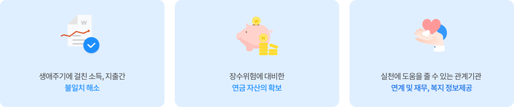

뒤로가기
상담안내
노후준비 상담서비스는 이렇게 진행됩니다.
1단계 진단
4개영역 진단문항을 통해 현재 재무, 건강, 여가, 대인관계영역 수준을 진단, 전국민 평균과 비교하여 부족분야를 파악하고 상·중·하 구분에 따른 대비전략을 제시합니다.
2단계 상담
노후준비수준을 끌어올리기 위한 개인별 목표를 정합니다.
분야별 취약점을 보완하기 위한 구체적인 과제를 제안하고, 꼭 알아 두어야 할 정보를 제공하여 스스로 실천에 옮길 수 있도록 지원합니다.
3단계 사후관리
상담 시 정한 과제들을 잘 신청하고 있는지 체크하는 과정입니다.
고객과 상담사가 함께 의논하여 다음 점검시기를 정해두고, 점검 일자에 대면 또는 전화를 통해 기간의 실행여부 또는 변경사항을 확인합니다. 관리 해주는 파트너가 있어, 고객 스스로 실천할 수 있는 동기부여가 됩니다.
종합재무설계를 무료로 받을 수 있습니다.
종합재무설계란?
안정된 노후생활을 목적으로 고객의 개인 또는 가계재무상태를 파악,분석하여 장기적 재무목표 를 설정,실천해 나갈 수 있도록 실행방법 제안 및 정보 제공
공단의 종합재무설계방향

- 생애주기에 걸친 소득, 지출간 불일치 해소
- 장수위험에 대비한 연금 자산의 확보
- 실천에 도움을 줄 수 있는 관계기관 연계 및 재무, 복지 정보제공
공단의 종합재무설계 프로세스
1차
- 재무설계 특징 및 상담절차 설명
- 요청서 작성 및 접수
- 2차 상담 예약
2차
-
의견서 작성 제공
- 재무상태평가결과안내
- 실천목표 및 과제협의
- 3차 상담 예약
3차
-
실천목표 이행 여부 점검
- 고객요청 시 실천목표 및 과제 등 재협의
- 고객요청 시 재무상황재점검
(4차 상담 진행)